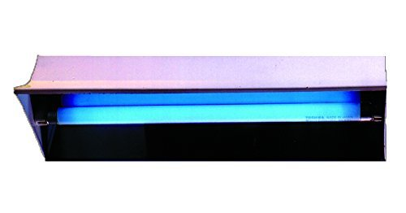

by Yash Aggarwal | on August 19, 2020 | at 11:05 am
At this time the whole world is busy finding out the perfect remedy to fight the Corona Virus. So, is it true to say that UV lights can kill deadly Coronavirus and other germs? UV light has already been proven beneficial against influenza and SARS. Researchers at Columbia University were recently able to destroy 99.9% of exposed airborne coronaviruses using UV-C rays. UV-C light is embedded with technology to use its properties to kill COVID and other viruses or germs.
Let’s just deep dive a little into what UV-C Technology is. There are mainly three categories of UV lights namely UV-A, UV-B and UV-C. Out of these, UV-C is useful for disinfecting purposes, whose wavelength lies between 100 and 280 nanometers. Just recently, a study published to the preprint database medRxiv on June 26 and currently awaiting peer review found confirmation that UV light kills SARS-CoV-2, the virus that causes COVID-19.
Scientists have revealed that exposure to UV-C light in the right dosage and at the right wavelength will damage the DNA and RNA of the cells of the microorganisms which stops them from replicating and therefore reduces their harm.
Because of this extraordinary property of the UV-C lights they are extremely useful. However according to the ACGIG( American Conference of Governmental Industrial Hygienists) humans must limit their exposure to UV-C. Therefore it makes it imperative to combine the UV-C technology with solutions that can limit human presence.
ZeroVir combines UV-C technology with Patented IOT solutions that detect human motion and ensure UV-C lights are not switched on in human presence. This makes ZeroVir the perfect solution to sanitize shared public spaces like lifts, classrooms, hospitals, houses, lifts, toilets, ATMs, etc.
Key Benefits of UV-C technology to kill COVID and other Viruses/Germs –
1. Contactless Sanitization – As it is a light and light spreads in all directions, you don’t need to make direct contact with the surface. The UV-C light when switched on will automatically sanitize all surfaces.
2. Quick Action – UV-C technology can disinfect a space in only 5-10 minutes. ZeroVir UV-C Lights are generally fully automated and hence do not need manual intervention. Their strength depends on the intensity of UV-C light and also the distance of the source from the surface on which we are using the light.
3. Effective and Efficient – Since ZeroVir UV-C devices operate with electricity, these devices can be most convenient to use. You are not dependent on a person to sanitize the environment making it highly efficient and easy to use. Also as light spreads evenly in all directions it is extremely effective and gives guaranteed 99% sanitization of the rooms.
4. Chemical Free Process – There are no chemicals involved in UV-C light sanitization therefore there are no side effects on surfaces being sanitized. This sanitization process is compatible with all other cleaning processes that might be implemented.
5. Pollution Free – The UV-C technology has been designed in such a way that it does not have any negative impact on our environment as well. There are no harmful emissions as well as their decomposition is safe. As we must be careful about our environment, it is very important that we use sanitization methods that don’t harm or pollute our surroundings.
6. Affordable – ZeroVir Lights are affordable and can be widely used across all applications making our offices, malls, schools, restaurants sanitized and safe.
In a nutshell, UV-C technology is an effective medium through which we can keep our surroundings sanitized killing 99% viruses and germs including COVID. Also, the technology is affordable and therefore can be used by all sections of society for different applications.
Categories:
Categories:
Tags: Affordable Contact Less Sanitization UV C Technology
No responses yet
Leave a Reply
Your email address will not be published. Required fields are marked *